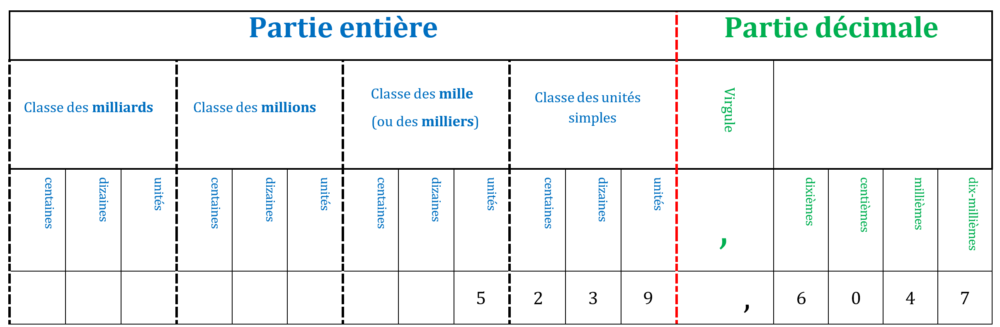

Exemple : Le chiffre des millièmes est 4 et le nombre de centièmes est 523 960.
Les différentes décompositions
Propriété : Un nombre décimal admet plusieurs décompositions.
Exemple : 153 unités, 4 dixièmes et 6 centièmes
- Écriture décimale : 153,46
- Somme de la partie entière et de la partie décimale : 153 + 0,46
- Somme de la partie entière et d'une fraction décimale : 153 + 46100
- Somme de la partie entière et de fractions décimales : 153 + 410 + 6100
- Fraction décimale : 15 346100
- Décomposition selon le rang des chiffres : (1 × 100) + (5 × 10) + (3 × 1) + (4 × 0,1) + (6 × 0,01)
Comparaison des nombres décimaux
Méthodologie
Pour comparer deux nombres, on commence par comparer leurs parties entières :
- Si elles sont différentes : les deux nombres sont rangés dans le même ordre que leurs parties entières.
- Si elles sont égales : on compare leurs parties décimales chiffre après chiffre en commençant par les dixièmes, puis les centièmes, puis les millièmes...
Exemple : Comparer 179,83 et 181.
Les parties entières sont différentes : 179 < 181.
Donc 179,83 < 181
Exemple : Comparer 2,8 et 2,13.
Les parties entières sont égales (2 = 2). On compare les dixièmes : 8 > 1.
Donc 2,8 > 2,13
Exemple : Comparer 7,23 et 7,3.
Les parties entières sont égales (7 = 7). On compare les dixièmes : 2 < 3.
Donc 7,23 < 7,3
Exemple : Ranger dans l'ordre croissant les nombres : 8,88 ; 38,8 ; 88,8 ; 8,08 ; 888,0 ; 8,808
8,08 < 8,808 < 8,88 < 38,8 < 88,8 < 888,0
Encadrer et intercaler
Il existe différents types d'encadrement :
• Encadrement à l'unité : 2 < 2,9888 < 3
Les deux nombres sont des entiers qui se suivent.
• Encadrement au dixième : 2,9 < 2,9888 < 3,0
Les deux nombres ont chacun un chiffre après la virgule qui se suivent.
• Encadrement au centième : 2,98 < 2,9888 < 2,99
Les deux nombres ont chacun deux chiffres après la virgule et les chiffres des centièmes se suivent.
Exemples :
• Encadre au dixième 36,457 : 36,4 < 36,457 < 36,5
• Encadre au centième 5,235 : 5,23 < 5,235 < 5,24
• Encadre à l'unité 236,56 : 236 < 236,56 < 237
Définition : Intercaler un nombre, c'est trouver un nombre à placer entre deux autres nombres donnés.
Exemples :
256 < ................. < 257
32,5 < ................. < 32,7
5,8 < ................. < 5,9
Nombres décimaux et demi-droite graduée
Propriété : Sur une demi-droite graduée, en partageant l'unité en 10 parties égales, chaque écart représente un dixième : 0,1.
En partageant un dixième en 10 parties égales, chaque écart représente un centième : 0,01.
Exemple : Placer A(2,7) sur cette demi-droite graduée.
2,7 = 2 + 0,7
= 2 +
710
On part donc de 2 et on reporte 7 dixièmes.
Exemple : Lire l'abscisse des points B et C.
B(1,4) et C(3,8)
Exercice :
Placer A(0,3), B(1,2), C(2,5) et D(3,9) sur cette demi-droite graduée.